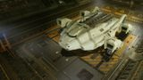

Макс. мест экономкласса
~170 (только экономкласс)
Крупнейший грузовик игры может возить пассажиров, но для экскурсий он подходит плохо. Два самых больших отсека предназначены только для груза и не принимают каюты. Поэтому, несмотря на размеры корпуса, он везёт не больше пассажиров, чем средний по вместимости лайнер. Грузовик Zorgon Peterson не получает надбавки за комфорт, так что каждый пассажир платит обычный тариф. Корабль медленный, требует большую площадку, а его корпус самый дорогой в игре. Beluga, Cutter и Anaconda выгоднее по всем показателям. Возите пассажиров на Panther, только если уже купили его для грузоперевозок.

У этого корабля оценка пригодности по шкале 1–100 отражает возможности полностью улучшенной у инженеров сборки для этой роли в сравнении со всеми кораблями той же роли. См. как выставляются оценки кораблям.
Panther Clipper Mk II — крупнейший грузовик игры, и на бумаге кажется, что его корпус создан для массовых пассажирских перевозок. На практике мешает компоновка: два самых крупных дополнительных отсека, один класса 8 и один класса 7, предназначены только для груза: в них можно ставить только грузовые стеллажи и топливные баки, но не пассажирские каюты. Пассажиры размещаются в отсеках размера 6 и меньше. Поскольку пассажирские каюты на любом корабле ограничены размером 6, Panther вмещает примерно 170 мест экономкласса. Это сопоставимо с Anaconda и Type-9 и заметно меньше, чем у Cutter или Beluga. Самый большой корпус в игре вмещает лишь среднюю по размеру группу.
Для этой роли хуже всего то, что это грузовик Zorgon Peterson, а не лайнер Saud Kruger. У него нет надбавки за комфорт пассажиров: за каждое место платят обычный тариф, как на Anaconda и Type-9. Корабль медленный (181/250 м/с), тяжело разворачивается, требует большую площадку и при цене ~287 млн кр. остаётся самым дорогим корпусом в игре. Зато корпус действительно крепкий: базовая броня 620, двухконтурный щит размера 7 и десять орудийных креплений для отпугивания противника. На опасных маршрутах он выживает лучше безоружного лайнера. Это его единственное преимущество.
Вариант для двух задач: если Panther уже куплен для грузов, каюты позволят использовать его как бронированный экскурсионный корабль на маршрутах, которых беззащитный лайнер избегал бы. Покупать его специально для пассажиров не стоит: слишком дорогой, медленный и без бонуса за комфорт.
Три особенности определяют Panther как пассажирский корабль, и только одна из них положительная:
Вместимость сама по себе не проблема: на Panther примерно столько же мест, сколько у Anaconda. Проблемы в другом: нет надбавки за комфорт, корпус массой 1,200 т недалеко прыгает с пассажирами (~25–28 св. лет с улучшениями), медленно летает, требует большую площадку и стоит ~287 млн кр. Дороже корпуса в игре нет. Столько же мест у Type-9 за четверть цены, а Beluga получает гораздо больше за каждого пассажира.
Крупнейший корпус игры вмещает всего ~170 пассажиров, потому что два самых больших отсека предназначены только для груза. У грузовика Zorgon Peterson нет надбавки за комфорт; при массе 1,200 т он прыгает недалеко, летит медленно, требует большую площадку и стоит дороже всех. Как защищённый корабль для двух задач он пригоден для экскурсий, но специально покупать его в этой роли невыгодно.
Итоговая оценка 48/100 основана на критериях пассажирской роли, расположенных по приоритету. У каждого критерия есть вес (доля от 100). Корабль получает часть баллов в зависимости от того, как выглядит на фоне соперников. Эти баллы складываются в итоговую оценку.
| Критерий | Баллы | Почему столько |
|---|---|---|
| Вместимость и класс кают | 27/35 | Вмещает ~170 мест экономкласса или смешанную группу первого класса и люкс, сопоставимую с Anaconda и Type-9. Но в дополнительный отсек класса 8 и один класса 7 можно поставить только грузовые модули, а не каюты. Поэтому крупнейший корпус в игре даёт среднюю вместимость и уступает Cutter (~340) и Beluga (~184). |
| Комфорт | 6/20 | Грузовик Zorgon Peterson без надбавки за комфорт лайнеров Saud Kruger получает обычный тариф за каждое место. Beluga, Orca, Lynx или Dolphin за такую же каюту заработают намного больше. Это основной недостаток корабля в этой роли. |
| Дальность прыжка и запас топлива | 6/20 | Корпус массой 1,200 т с заполненными каютами и FSD размера 7 прыгает всего на ~25-28 св. лет с инженерными улучшениями («Увеличенная дальность» и «Управление массой») и штатным баком 7C. Это заметно хуже, чем у Anaconda, и ограничивает экскурсии окрестностями Пузыря. |
| Щит и безопасность | 8/15 | Базовая броня 620, двухконтурный щит размера 7 на более чем ~1,100 МДж с четырьмя усилителями с «Усиленной конструкцией» и 10 орудийных креплений делают его трудной добычей. Это его единственное преимущество, но при 181/250 м/с от погони не уйти, и это ограничивает безопасность. |
| Класс площадки и цена | 1/10 | Корпус за ~287 млн кр. (~330 млн и больше со снаряжением) — самый дорогой в игре. Большая площадка закрывает доступ к туристическим аванпостам, которые обслуживают средние и малые корабли. Покупка невыгодна: Type-9 даёт те же ~170 мест за четверть цены. |
| Взвешенный итог | 48/100 | Совпадает с оценкой пригодности этого корабля для выбранной роли в заголовке. |
Веса отражают редакционную расстановку приоритетов для этой роли, а не формулу из игры. Длина полосы показывает, какую часть баллов корабль получил по критерию: самые длинные принесли больше всего баллов, самые короткие показывают слабые места. См. как выставляются оценки кораблям.
В каждой таблице корабли оцениваются именно для перевозки пассажиров, с разделением по размерам посадочных площадок. Столбец Места в каютах показывает суммарную вместимость дополнительных отсеков под каюты. Оценка пригодности по шкале 1–100 та же, что на всём сайте.
| Корабль | Класс | Места в каютах | Плюсы и минусы | Оценка |
|---|---|---|---|---|
| Beluga Liner | Большой | ~370 t | Оценка выше; каюты; комфортДальность | 95 |
| Imperial Cutter | Большой | ~794 t | Оценка выше; каюты; щитКомфорт | 89 |
| Orca | Большой | ~194 t | Оценка выше; комфорт; площадка и ценаДальность | 88 |
| Anaconda | Большой | ~470 t | Оценка выше; дальность; каютыКомфорт | 82 |
| Imperial Clipper | Большой | ~250 t | Оценка выше; щит; дальностьКомфорт | 64 |
| Caspian Explorer | Большой | ~434 t | Оценка выше; каюты; дальностьПлощадка и цена | 60 |
| Type-7 Transporter | Большой | ~310 t | Оценка выше; каюты; площадка и ценаКомфорт | 56 |
| Type-9 Heavy | Большой | ~790 t | Оценка выше; каюты; площадка и ценаКомфорт | 56 |
| Panther Clipper Mk II здесь | Большой | ~662 t | — этот корабль (точка отсчёта) | 48 |
Оценены 9 пассажирских кораблей с большой площадкой; лидирует Beluga Liner (95). Все они садятся на площадки того же класса и являются прямыми альтернативами Panther.
| Корабль | Класс | Места в каютах | Плюсы и минусы | Оценка |
|---|---|---|---|---|
| Lynx Highliner | Средний | — | Оценка выше; комфорт; площадка и ценаЩит | 90 |
| Python | Средний | ~294 t | Оценка выше; щит; площадка и ценаКомфорт | 70 |
| Krait Phantom | Средний | ~190 t | Оценка выше; дальность; площадка и ценаКомфорт | 64 |
| Asp Explorer | Средний | ~130 t | Оценка выше; площадка и цена; дальностьКомфорт | 60 |
| Mandalay | Средний | ~154 t | Оценка выше; площадка и цена; дальностьКомфорт | 54 |
| Corsair | Средний | ~318 t | Оценка выше; каюты; щитКомфорт | 50 |
| Krait Mk II | Средний | ~230 t | Каюты; дальностьОценка ниже; площадка и цена | 46 |
| Type-8 Transporter | Средний | ~406 t | Каюты; площадка и ценаОценка ниже; комфорт | 46 |
Среди пассажирских кораблей со средней площадкой оценены 8; лидирует Lynx Highliner (90). Это более дешёвые корпуса и более компактные площадки. По характеристикам они обходят Panther, но относятся к другому классу площадок.
| Корабль | Класс | Места в каютах | Плюсы и минусы | Оценка |
|---|---|---|---|---|
| Dolphin | Малый | ~88 t | Оценка выше; комфорт; площадка и ценаКаюты | 80 |
| Imperial Courier | Малый | ~34 t | Оценка выше; площадка и цена; щитКаюты | 52 |
Среди пассажирских кораблей с малой площадкой оценены 2; лидирует Dolphin (80). Это более дешёвые корпуса и меньшие площадки. По характеристикам они обходят Phantom, но относятся к другому классу площадок.
При цене ~287 млн кр. Panther — самый дорогой корпус в игре, и ранг или разрешение ему не нужны. Но для перевозки пассажиров такая цена не даёт ничего, чего более дешёвый корабль не сделает лучше. Оснащение включает каюты в отсеках размера 6 и меньше, двухконтурный щит размера 7, усилители щита, точечную оборону. Полная сборка стоит больше 330 млн кр.
Для одних экскурсий это не оправдать. Type-9 даёт те же ~170 мест за четверть цены, Python или Krait Phantom садится на аванпостах, недоступных Panther, а Beluga получает надбавку за комфорт за каждого пассажира. Panther оправдывает расходы, только если уже куплен для грузов и нужен один бронированный корабль, который ещё и возит туристов по опасным маршрутам.
Больше 330 млн кр. за сборку, у которой два крупнейших отсека не принимают каюты, а пассажиры платят обычные тарифы. Покупайте Panther ради грузов. Возите на нём пассажиров, только если он у вас уже есть и маршрут достаточно опасен, чтобы пригодилась броня.
Экскурсионная сборка для крупнейшего корпуса в игре: смешанный набор кают, двухконтурный щит размера 7 под корпус массой 1,200 т и дальнобойный FSD. Начальная версия требует только покупок: пара кают экономкласса позволяет начать зарабатывать. Класс A — базовая пассажирская сборка. Инженерные улучшения снижают массу ради дальности и укрепляют щит. Два крупнейших отсека предназначены только для груза и не принимают каюты: ставьте туда стеллажи. Класс кают меняйте под заказ: эконом для групп, первый или люкс для VIP.
| Отсек | Начальная · только покупка | Класс A · без улучшений | С инженерными улучшениями | Примечания |
|---|---|---|---|---|
| Внешние крепления | ||||
| Внешнее 1 | — | 0A Усилитель щита | G5 Усиленная конструкция + Суперконденсаторы | Первый усилитель щита — самый дешёвый способ заметно повысить прочность двухконтурного щита в МДж и защитить пассажиров. |
| Внешнее 2 | — | 0A Усилитель щита | G5 Усиленная конструкция + Суперконденсаторы | Второй усилитель с «Усиленной конструкцией». Несколько усилителей дают основную часть прочности щита этого тяжёлого корпуса. |
| Внешнее 3 | — | 0A Усилитель щита | G5 Усиленная конструкция + Суперконденсаторы | Третий усилитель с «Усиленной конструкцией» защищает корпус массой 1,200 т от перехватчиков. |
| Внешнее 4 | — | 0A Усилитель щита | G5 Усиленная конструкция + Суперконденсаторы | Четвёртый усилитель завершает набор усилителей. Остальные крепления займут средства противодействия. |
| Внешнее 5 | — | 0I Теплоотводная катапульта | G1 Запас боеприпасов (нет экспериментального эффекта) | Необязательно, низкий приоритет. «Запас боеприпасов» добавляет заряды катапульты. Она сбрасывает тепло при скрытном ходе. |
| Внешнее 6 | — | 0I Точечная оборона | G1 Запас боеприпасов (нет экспериментального эффекта) | Необязательно, низкий приоритет. «Запас боеприпасов» добавляет патроны. Точечная оборона сбивает подлетающие ракеты и торпеды. |
| Основные модули | ||||
| Обшивка | Лёгкий сплав | Лёгкий сплав | G5 «Облегчённый» (нет экспериментального эффекта) | |
| Силовая установка | 8E Силовая установка | 8A Силовая установка | G5 Низкое тепловыделение + Рассеивание тепла | Установка 8A питает каюты, большой щит и модули. «Низкое тепловыделение» и «Рассеивание тепла» снижают нагрев на оживлённых маршрутах. |
| Маневровые двигатели | 8E Маневровые двигатели | 8A Маневровые двигатели | G5 Грязная настройка двигателей + Форсированные двигатели | 8A + «Грязная настройка двигателей» дают корпусу массой 1,200 т скорость, чтобы уйти от перехвата с пассажирами на борту. |
| Рамочно-сместительный двигатель (FSD) | 7E Рамочно-сместительный двигатель (FSD) | 7A Рамочно-сместительный двигатель (FSD) | G5 Увеличенная дальность + Управление массой | Модуль 7A — самый важный в сборке: Увеличенная дальность и «Управление массой» возвращают дальность с пассажирами. |
| Система жизнеобеспечения | 5E Система жизнеобеспечения | 5D Система жизнеобеспечения | G5 Облегчённый (нет экспериментального эффекта) | Поставьте класс D, чтобы снизить массу ради дальности; Облегчённый ещё уменьшает массу. системы жизнеобеспечения нужна лишь для того, чтобы пережить аварийную ситуацию. |
| Распределитель энергии | 7E Распределитель энергии | 7A Распределитель энергии | G5 Приоритет двигателей + Сверхпроводники | Модуль 7A держит запас энергии ENG для форсажа; «Приоритет двигателей» направляет больше энергии в ENG, чтобы тяжёлый корпус мог уйти от опасности на форсаже. |
| Сенсоры | 5E Сенсоры | 5D Сенсоры | G5 Облегчённый (нет экспериментального эффекта) | Поставьте класс D и облегчённое улучшение: лайнеру не нужна дальность сенсоров, а снижение массы увеличивает дальность прыжка. |
| Топливный бак | 7C Топливный бак | 7C Топливный бак | (нет чертежа улучшения) | Штатный бак 7C. Ёмкость фиксирована и не поддаётся инженерному улучшению. |
| Дополнительные отсеки | ||||
| Размер 8 | — | 8E Грузовой стеллаж | (нет чертежа улучшения) | Только для груза: дополнительный отсек класса 8 не принимает каюту. Поставьте стеллаж под груз по заданию или багаж, а не пассажирские места. |
| Размер 8 | 6E Пассажирская каюта экономкласса | 6E Пассажирская каюта экономкласса | (нет чертежа улучшения) | Каюта экономкласса 6: 32 места. Каюта размера 6 — самая большая из доступных, поэтому в отсеке класса 8 останется свободное место. |
| Размер 7 | — | 7E Грузовой стеллаж | (нет чертежа улучшения) | Только для груза: дополнительный отсек класса 7 тоже не принимает каюту. Только стеллажи или топливо. |
| Размер 7 | — | 7C Генератор двухконтурного щита | G5 Усиленный + Быстрая зарядка | Двухконтурный щит 7 рассчитан на корпус массой 1,200 т. «Усиленный» доводит прочность в МДж до максимума, «Быстрая зарядка» возвращает щиту его быстрое восстановление. |
| Размер 6 | 6E Пассажирская каюта экономкласса | 6E Пассажирская каюта экономкласса | (нет чертежа улучшения) | Каюта экономкласса 6: ещё 32 места. Замените на бизнес-класс, когда заказ доплачивает за комфорт. |
| Размер 6 | — | 6C Пассажирская каюта первого класса | (нет чертежа улучшения) | Каюта первого класса 6 для премиальных заказов. Для первого класса нужен отсек размера 4 или больше, поэтому крупный отсек пригодится. |
| Размер 6 | — | 6E Пассажирская каюта экономкласса | (нет чертежа улучшения) | Каюта экономкласса 6: максимум мест для заказа, где важно количество пассажиров. |
| Размер 5 | — | 5E Пассажирская каюта экономкласса | (нет чертежа улучшения) | Каюта экономкласса 5: 16 мест. Замените на бизнес-класс для премиальных мест среднего уровня. |
| Размер 5 | — | 5B Пассажирская каюта люкс | (нет чертежа улучшения) | Каюта люкс 5 для VIP-экскурсий высшего класса. Люкс помещается только в отсеки размера 5 и больше. |
| Размер 4 | — | 4E Пассажирская каюта экономкласса | (нет чертежа улучшения) | Каюта экономкласса 4: 8 мест. Замените на первый класс, если нужны премиальные места (минимальный размер 4). |
| Размер 2 | — | 2A Банк щитовых ячеек | G4 Специализированный + Снижение массы | Необязательно, низкий приоритет. «Специализированный» снижает скачок тепла и энергопотребления банка. Позволяет экстренно восстановить щит. |
| Размер 1 | — | 1I Подробный сканер поверхности | G5 Увеличенный радиус сканирования зондов (нет экспериментального эффекта) | Необязательно, низкий приоритет. Увеличенный радиус сканирования расширяет покрытие зондов. Позволяет картографировать планеты для туристических данных. |
| Планировщики и экспорт | ||||
| Открыть в Coriolis | открыть | открыть | открыть | Открывается на coriolis.io одним нажатием. |
| Открыть в EDSY | открыть | открыть | открыть | Открывается на edsy.org одним нажатием. |
| Скопировать SLEF | Копирует исходные данные формата экспорта оснащения корабля (SLEF) для выбранного варианта. | |||
Panther — крупнейший корпус в игре, но один дополнительный отсек класса 8 и один класса 7 предназначены только для груза. Они принимают стеллажи или баки, но не каюты. Пассажиры летят в отсеках размера 6 и меньше, а наибольшие каюты имеют размер 6. Несмотря на размеры корпуса, мест примерно столько же, сколько у среднего по вместимости лайнера. Грузовик Zorgon Peterson не получает надбавки за комфорт Saud Kruger, поэтому за каждое место платят обычный тариф. На опасных маршрутах оставьте двухконтурный щит, усилители и точечную оборону.
Купите корпус со штатной обшивкой из лёгкого сплава — в первый день тратить деньги на неё не нужно. Поставьте пару кают экономкласса, чтобы начать зарабатывать. Две покупные каюты размера 6 вмещают 64 пассажира, пока вы копите на сборку класса A.
Пока оставьте грузовые отсеки класса 8 и класса 7 пустыми или поставьте дешёвые стеллажи. Сохраните свободный отсек класса 7 для двухконтурного щита: медленному и дорогому кораблю щит необходим.
Заполните остальные отсеки размера 6 и меньше каютами экономкласса. Прежде чем ставить премиальные каюты первого класса или люкс, доведите силовую установку и распределитель до класса A.
Приоритет перехода на класс A для тяжёлого экскурсионного корабля:
В отличие от лёгкого лайнера, этот корабль ограничен дальностью и подвижностью. Доведите до класса A FSD, силовую установку и маневровые двигатели, прежде чем тратить деньги на премиальные каюты. Первый класс или люкс приносит больше с пассажира, но только если корабль доберётся до экскурсионного маяка и переживёт перелёт.
В пассажирской сборке инженерные улучшения касаются корабля, а не кают: их нельзя прокачать. В первую очередь улучшайте дальность FSD и прочность щитов тяжёлого корпуса. Felicity Farseer (при максимальном доступе) предлагает улучшения для FSD.
Примерное изменение показателей между тремя вариантами (цифры ориентировочные, а не точные результаты улучшений):
| Модуль | Чертёж | Экспериментальный эффект | Инженер |
|---|---|---|---|
| Рамочно-сместительный двигатель (FSD) (7) | Увеличенная дальность (G5) | Управление массой | Felicity Farseer |
| Маневровые двигатели (8) | Грязная настройка двигателей (G5) | Форсированные двигатели | Professor Palin / Mel Brandon |
| Силовая установка (8) | Низкое тепловыделение (G5) | Рассеивание тепла | Hera Tani |
| Распределитель энергии (7) | Приоритет двигателей (G5) | Сверхпроводники | The Dweller |
| Двухконтурный щит (7) | Усиленный (G5) | Быстрая зарядка | Lei Cheung |
| Усилители щита | Усиленная конструкция (G5) | Суперконденсаторы | Didi Vatermann |
| Система жизнеобеспечения / Сенсоры | Облегчённый (G5) | — | Etienne Dorn |
| Обшивка | Облегчённый (G5) | — | Selene Jean |
С инженерными улучшениями Panther везёт пассажиров разных классов под щитом на ~1,100 МДж, уходит от перехвата с двигателями 8A и улучшением «Грязная настройка двигателей» и возвращает дальность с пассажирами до ~28 св. лет благодаря улучшению «Увеличенная дальность» для FSD и облегчённому корпусу. Но инженерные улучшения не дают надбавку за комфорт, не открывают два отсека для кают, не исправляют медленный корпус и не заменяют большую площадку. В итоге это безопасный, но дорогой экскурсионный корабль, который уступает по доходу более дешёвому.
Подойдёт любой экскурсионный заказ в окрестностях Пузыря, но дальность мала. Оставайтесь на маршрутах, не требующих дальних прыжков. Для далёких экскурсионных маяков лучше взять более дальнобойный Anaconda или Krait Phantom.
Panther Clipper Mk II может перевозить пассажиров, но покупать его для этого не стоит. Крупнейший корпус игры вмещает всего ~170 мест, потому что два самых больших отсека принимают только груз. Корабль не получает надбавки за комфорт, мало прыгает для своей массы, медленно летает, требует большую площадку и стоит дороже любого другого. Его оценка — 48. Это безопасный бронированный экскурсионный корабль для опасных маршрутов, если вы уже используете его и для грузов. Для остальных это невыгодный выбор. Покупайте ради грузов, а туристов возите, если корабль уже у вас.
Цифры на этой странице сверены по следующим источникам.